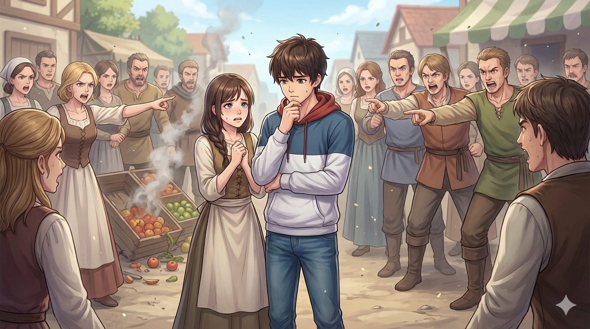
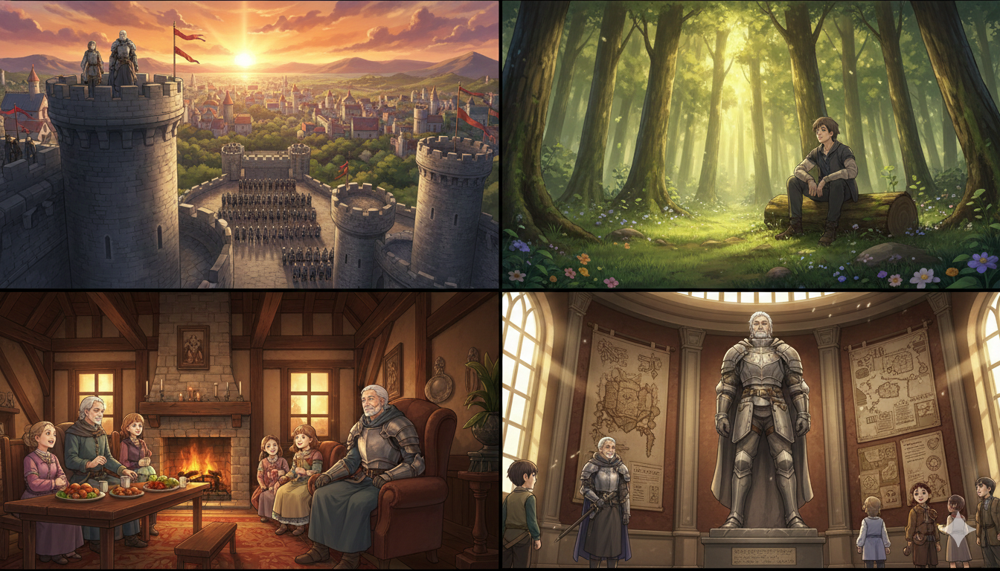
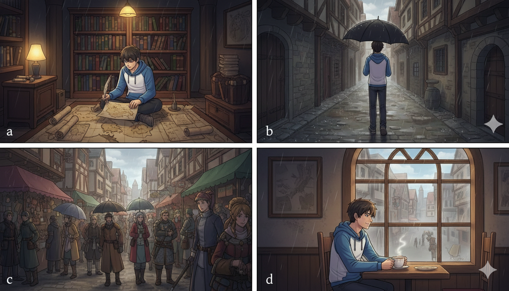
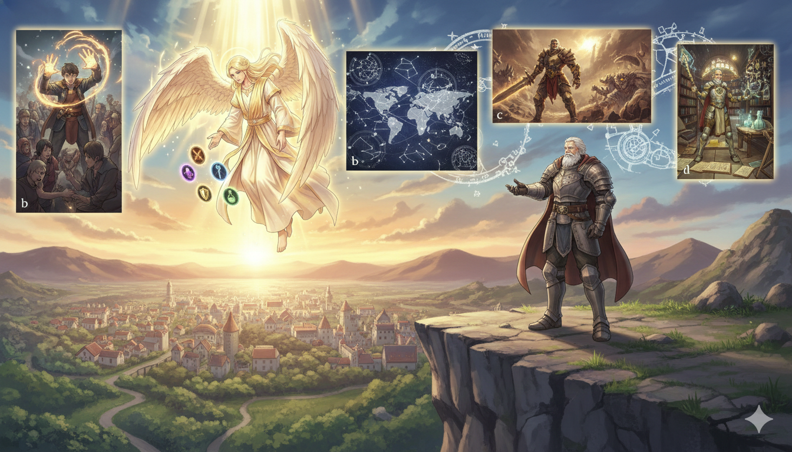

내 직업은 판타지에서 찾겠습니다
이세계에 떨어진 당신, 어떤 선택을 하게 될까요?
장면마다 “진짜 나 같아 보이는 선택” 하나씩 골라 주세요.
장면마다 “진짜 나 같아 보이는 선택” 하나씩 골라 주세요.
시작 화면

“눈 떠 보니, 이세계였다.”
신이 건네는 한 가지 능력,
처음 눈을 뜬 장소,
위기에서 취하는 당신의 선택까지.
당신의 선택으로 완성되는
나만의 판타지 직업 테스트입니다.

Q1. 신의 선물
현실에서 쓰러진 당신 앞에, 신이 나타났다.
“이세계에서 새로운 삶을 살아보거라, 능력을 주마.”

Q2. 처음 눈을 뜬 곳
눈을 뜨니 정말 이세계다. 정신 차리고 보니, 나는…

Q3. 첫 전투
마을로 몬스터 떼가 쳐들어왔다.
때마침 내 손엔 나무판자가 쥐어져 있는데, 이때 내 행동은?

Q4. 길 잃은 생명
우연히 손바닥 크기의 작은 생명체가 피투성이로 쓰러져 있는 걸 발견했다.
당신 주머니에는 단 한 번 살릴 수 있는 부활의 돌이 있다.
이 돌은, 미래의 당신 목숨을 살릴 수도 있다.

Q5. 무너지는 성벽
성벽이 무너지며 하늘에서 공격이 쏟아진다.
시간은 얼마 남지 않았다. 나는 어디로 가서 도와야 할까?

Q6. 가장 무능해 보이는 인간
전쟁이 길어지고 있다. 전쟁의 문제점은 바로 저 사람인 것 같다.
어떤 사람을 바꿔야 할까?

Q7. 제안
많은 모험을 통해 어느덧 영웅으로 칭송받는 당신.
많은 사람이 몰려와 다양한 제안을 한다. 하나만 선택한다면?

Q8. 수련법 정하기
전투에서 패배하고 말았다. 만회하기 위해선 더 강해져야 한다.
결심한 첫날 밤, 스스로 세운 수련 방식은?

Q9. 애인의 큰 사고
미래를 약속한 애인이 마을에서 큰 사고를 쳤다.
비난이 쏟아지려는 그 순간, 당신이 제일 먼저 한 행동은?

Q10. 비밀 의뢰
왕이 비밀 임무를 내밀었다. 어떤 임무를 수행할까?

Q11. 비 오는 휴일
궂은 날씨, 모든 약속이 취소되어 처음으로 완전한 휴일이 생겼다.
이 하루를 제일 ‘나답게’ 쓰는 방법은?

Q12. 내가 고른 자리
긴 모험이 끝났다. 내 삶도 끝을 보인다.
당신이 마지막으로 가보고 싶은 곳은?

Q13. 다음 생엔, 정말 하고 싶은 일
긴 모험이 끝난 뒤, 신이 다시 나타났다.
“이번 생 고생 많았다. 다음 생에는 정말 너 하고 싶은 것을 할 수 있는 힘을 줄게”
라고 말한다. 당신의 선택은?
🎲 이세계 직업 결과